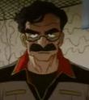
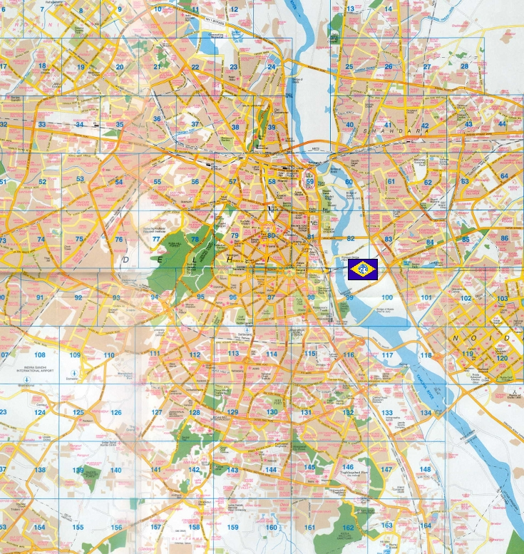

New Delhi New Delhi
East Asia, Central India Urban Fortress Kojima The site of many old empires from all over the world, the sprawling metropolis of New Delhi is still as poor as it was long ago, civilians not able to afford to migrate to the colonies. Conservative, superstitious and religious, the Earth Federation has always had a hard time controlling this part of the world. Using New Delhi as a staging base for their operations in Southeast Asia and China, it is a key area in the Federations remaining grip on the Eurasian continent.  Kojima Well liked by his men, Kojima is a rugged frontiersman, hating the dull life in an air conditioned office and preferring the sick, malaria filled air of the front. Although given a powerful Big Tray by command, he has his own office on the lawn in front of its main cannons, chairs and tables covered in maps of the thick jungle outside New Delhis gates. New Delhi  |